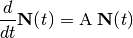
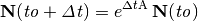
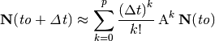
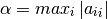
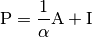
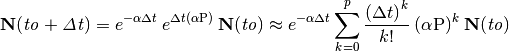
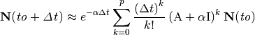
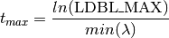

Radioactive Decay in Cyclus¶
Warning
Decay in Cyclus is experimental.
Radioactive decay of a group of isotopes over time can be described by the following first order differential equation:

where the vector N(t) contains the number density of all the isotopes being considered at time t, and A is called the decay matrix. The solution to this differential equation can be expressed in terms of a matrix exponential:

The decay method currently implemented in Cyclus computes this matrix exponential solution at any given time using a series approximation known as the Uniformization Method. This implementation was written by Kerry Dunn, and is explained in more detail below.
The Uniformization Method¶
The Uniformization Method is essentially a modification of the truncated Taylor Series expansion of the matrix exponential solution, which can be described by the following summation:

The primary disadvantage of using this Taylor Series expansion to compute the matrix exponential solution is that it can be subject to cancellation error as a result of summing terms with alternating signs. These terms with alternating signs occur because the diagonal elements in the decay matrix that represent the decay constants are all negative. Therefore, in order to eliminate the potential for cancellation error, the decay matrix must be modified so that it no longer contains these negative elements. This modification process is known as the uniformization technique.
The first step in applying the uniformization technique is to define alpha to be equal to the absolute value of the maximum diagonal element of A:

Then, given alpha, the next step is to redefine the matrix exponential solution using a different matrix P:

where I is the identity matrix. Note that P is completely non-negative, so a Taylor Series expansion of this matrix exponential is not subject to the same cancellation error that occurs with the original decay matrix. By replacing A with P, the matrix exponential solution can now be expressed by the following summation:

Note that this modified Taylor Series expansion can also be expressed in terms of the original matrix A by substituting the definition for P:

Implementation in Cyclus¶
Adding New Isotopes¶
Limitations¶
When adding a new isotope, the most important thing to take into account is its half-life or decay constant. The isotope with the smallest half-life, or largest decay constant, will be the limiting factor for the time scale over which Cyclus can decay _all_ materials in one step. This occurs because the Uniformization Method requires the computation of an exponential term, which is limited by the size of a long double on the system being used to run Cyclus. To determine the maximum time scale that will be valid for a particular group of isotopes, the following equation can be used:

where LDBL_MAX is the size of a long double and  is the
largest decay constant of the group of isotopes being considered.
is the
largest decay constant of the group of isotopes being considered.
As an example, suppose that the isotope with the smallest half-life being considered is Cm-232. This particular isotope has a decay constant of 1.5532 nuclei per year. If the size of a long double is limited to LDBL_MAX = 1.18973e+4932, then all materials can only be decayed for a maximum of 7311 years. Adding any isotopes with a half-life smaller than Cm-232 would result in an even lower maximum time scale.
References¶
- Cleve Moler and Charles van Loan, “Nineteen Dubious Ways to Compute the Exponential of a Matrix, Twenty-Five Years Later,” SIAM Review, 45, 3-49 (2003)
- Erwin Muller, Frederik Reitsma and Paulus P. Kruger, “A Stable Nuclide Transmutation Procedure Free of Numerical Roundoff,” PHYSOR 2006, September 10-14, Vancouver, Canada (2006)
- R. B. Sidje and W. J. Stewart, “A numerical study of large sparse matrix exponentials arising in Markov chains,” Computational Statistics & Data Analysis, 29, 345-368 (1999)

Previous page
Next page
Useful Pages
- User Guide
- Archetype Developer Guide
- Cyclus API Documentation
- Cycamore API Documentation
- Glossary
- Join the Cyclus Users mailing list.
- Join the Cyclus Developers mailing list.
Get Cyclus
Current version: 1.0.0
Install:
$ conda install cyclus cycamoreAcknowledgements
The Cyclus project has received support from:In addition, some of the students working on Cyclus have received support from: